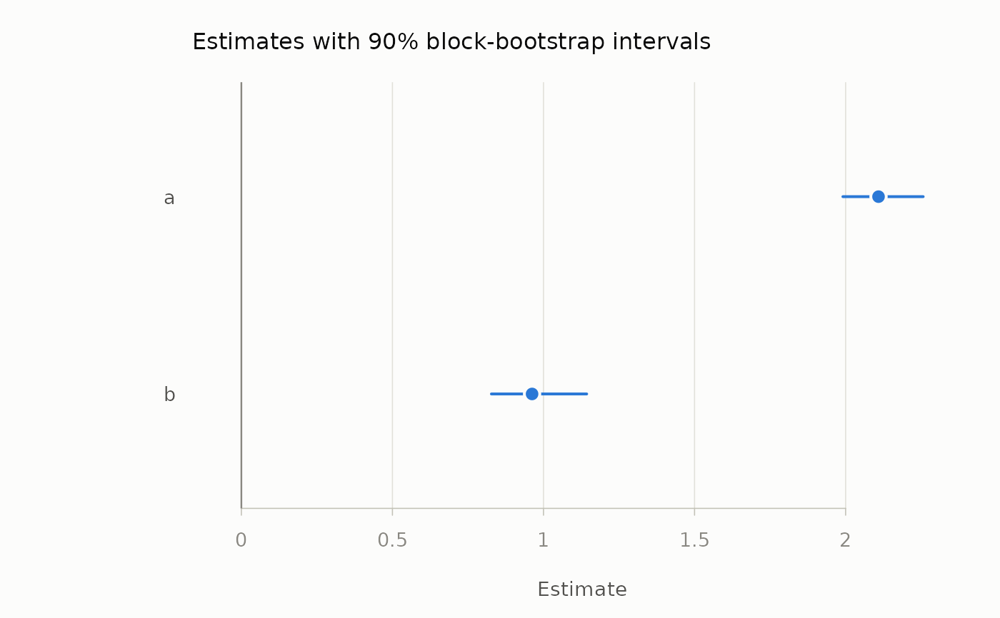

One row per term: the estimate on the original data as a dot and the percentile interval as a line, ordered by estimate.
Usage
# S3 method for class 'mm_bootstrap'
plot(x, reference = NULL, xlab = "Estimate", ...)Arguments
- x
An
mm_bootstrapobject fromblock_bootstrap().- reference
Optional value drawn as a muted vertical line –
1for an ROI's break-even point,0for a coefficient.- xlab
Axis label.
- ...
Ignored.
Examples
set.seed(1)
d <- data.frame(a = rnorm(100, 2), b = rnorm(100, 1))
b <- block_bootstrap(d, function(d) colMeans(d), times = 100, seed = 1)
plot(b, reference = 0)
